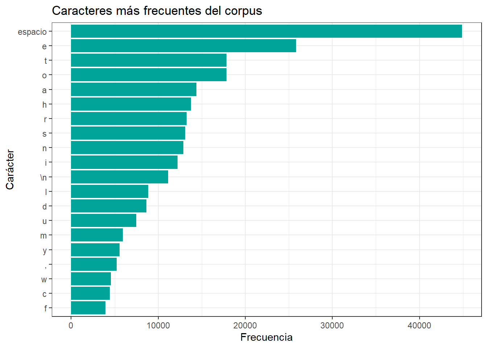
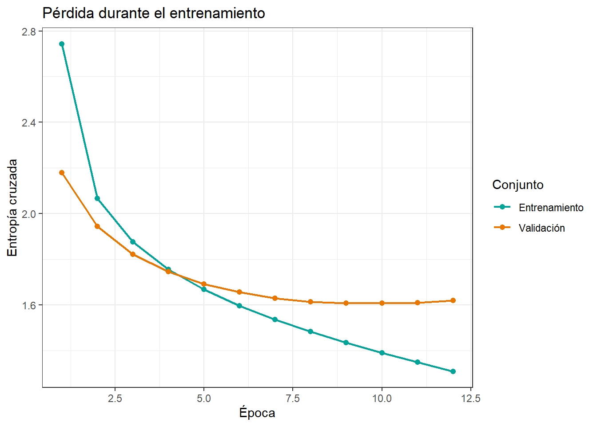

library(tensorflow)
library(keras)
library(tidyverse)
set.seed(100)
tensorflow::tf$random$set_seed(100)
modo_rapido <- FALSEDeep Learning
LSTM: generación de texto carácter a carácter en R
1 Introducción
En este ejemplo construiremos un modelo autoregresivo carácter a carácter. La idea es que la red aprenda una distribución de probabilidad para el siguiente carácter:
p\left(x^{(t+1)} \mid x^{(1)}, \ldots, x^{(t)}\right).
Durante la generación, el carácter predicho se vuelve a incorporar como entrada para producir el siguiente. Así aparece una pequeña realimentación: cada decisión afecta el contexto disponible para las próximas decisiones.
2 Librerías y corpus
Primero buscaremos un archivo local db/04_RNN/quijote.txt. Si no existe, descargaremos una versión pública del corpus de Shakespeare y la guardaremos en db/04_RNN/shakespeare.txt.
dir.create("db/04_RNN", recursive = TRUE, showWarnings = FALSE)
quijote_path <- "db/04_RNN/quijote.txt"
shakespeare_path <- "db/04_RNN/shakespeare.txt"
shakespeare_url <- "https://storage.googleapis.com/download.tensorflow.org/data/shakespeare.txt"
if (file.exists(quijote_path)) {
corpus_path <- quijote_path
corpus_nombre <- "Quijote"
} else {
if (!file.exists(shakespeare_path)) {
download.file(shakespeare_url, destfile = shakespeare_path, mode = "wb")
}
corpus_path <- shakespeare_path
corpus_nombre <- "Shakespeare"
}
lineas <- readLines(corpus_path, encoding = "UTF-8", warn = FALSE)
texto <- paste(lineas, collapse = "\n")
tibble(
corpus = corpus_nombre,
archivo = corpus_path,
caracteres = nchar(texto)
)# A tibble: 1 × 3
corpus archivo caracteres
<chr> <chr> <int>
1 Shakespeare db/04_RNN/shakespeare.txt 11153933 Exploración del texto
max_chars <- if (modo_rapido) 60000 else min(nchar(texto), 300000)
texto_modelo <- substr(texto, 1, max_chars)
chars_texto <- strsplit(texto_modelo, split = "")[[1]]
chars_unicos <- sort(unique(chars_texto))
tibble(
caracteres_usados = length(chars_texto),
caracteres_unicos = length(chars_unicos),
fragmento_breve = substr(texto_modelo, 1, 220)
)# A tibble: 1 × 3
caracteres_usados caracteres_unicos fragmento_breve
<int> <int> <chr>
1 300000 62 "First Citizen:\nBefore we proceed any fu…No incluiremos fragmentos extensos del corpus. Solo necesitamos reconocer su tamaño, su vocabulario de caracteres y algunas frecuencias.
freq_chars <- tibble(caracter = chars_texto) %>%
count(caracter, sort = TRUE) %>%
mutate(
caracter_mostrado = case_when(
caracter == "\n" ~ "\\n",
caracter == " " ~ "espacio",
TRUE ~ caracter
)
)
freq_chars %>%
slice_head(n = 20) %>%
ggplot(aes(x = reorder(caracter_mostrado, n), y = n)) +
geom_col(fill = "#00A499") +
coord_flip() +
labs(
title = "Caracteres más frecuentes del corpus",
x = "Carácter",
y = "Frecuencia"
) +
theme_bw()
4 Codificación
El modelo no recibe directamente letras, sino identificadores enteros. Para eso construimos un vocabulario de caracteres y dos correspondencias: carácter a índice e índice a carácter.
vocab_size <- length(chars_unicos)
char_to_id <- seq.int(0L, vocab_size - 1L)
names(char_to_id) <- chars_unicos
id_to_char <- chars_unicos
texto_int <- unname(char_to_id[chars_texto])
texto_int <- as.integer(texto_int)
tibble(
caracter = chars_unicos[1:min(12, vocab_size)],
indice = char_to_id[chars_unicos[1:min(12, vocab_size)]]
)# A tibble: 12 × 2
caracter indice
<chr> <int>
1 "'" 0
2 "-" 1
3 " " 2
4 "\n" 3
5 "!" 4
6 "&" 5
7 "," 6
8 "." 7
9 ":" 8
10 ";" 9
11 "?" 10
12 "a" 115 Construcción de secuencias
Construiremos pares desplazados. La entrada intenta predecir el carácter siguiente en cada posición:
Entrada: H o l a ...
Objetivo: o l a ...
Esto ilustra una tarea secuencia a secuencia, porque la red produce una predicción para cada paso temporal.
sequence_length <- if (modo_rapido) 60 else 100
step <- if (modo_rapido) 6 else 3
max_sequences <- if (modo_rapido) 4000 else 30000
starts <- seq(1, length(texto_int) - sequence_length, by = step)
starts <- starts[seq_len(min(length(starts), max_sequences))]
x <- matrix(0L, nrow = length(starts), ncol = sequence_length)
y <- matrix(0L, nrow = length(starts), ncol = sequence_length)
for (i in seq_along(starts)) {
inicio <- starts[i]
x[i, ] <- texto_int[inicio:(inicio + sequence_length - 1)]
y[i, ] <- texto_int[(inicio + 1):(inicio + sequence_length)]
}
tibble(
muestras = nrow(x),
pasos_de_tiempo = ncol(x),
vocabulario = vocab_size
)# A tibble: 1 × 3
muestras pasos_de_tiempo vocabulario
<int> <int> <int>
1 30000 100 62reconstruir_texto <- function(indices) {
paste0(id_to_char[as.integer(indices) + 1L], collapse = "")
}
tibble(
entrada = reconstruir_texto(x[1, 1:60]),
objetivo = reconstruir_texto(y[1, 1:60])
)# A tibble: 1 × 2
entrada objetivo
<chr> <chr>
1 "First Citizen:\nBefore we proceed any further, hear me speak." "irst Citizen…6 Entrenamiento y validación
Mantendremos el orden interno de cada secuencia. La separación entre entrenamiento y validación se hace sobre las ventanas ya construidas.
n_train <- floor(0.85 * nrow(x))
x_train <- x[1:n_train, , drop = FALSE]
y_train <- y[1:n_train, , drop = FALSE]
x_val <- x[(n_train + 1):nrow(x), , drop = FALSE]
y_val <- y[(n_train + 1):nrow(y), , drop = FALSE]
tibble(
conjunto = c("Entrenamiento", "Validación"),
muestras = c(nrow(x_train), nrow(x_val)),
pasos_de_tiempo = c(ncol(x_train), ncol(x_val))
)# A tibble: 2 × 3
conjunto muestras pasos_de_tiempo
<chr> <int> <int>
1 Entrenamiento 25500 100
2 Validación 4500 1007 Modelo
embedding_dim <- if (modo_rapido) 24 else 48
unidades <- if (modo_rapido) 48 else 128
model_text <- keras_model_sequential(name = "lstm_generacion_texto") %>%
layer_embedding(
input_dim = vocab_size,
output_dim = embedding_dim,
input_length = sequence_length
) %>%
layer_lstm(
units = unidades,
return_sequences = TRUE
) %>%
layer_dense(units = vocab_size)
summary(model_text)Model: "lstm_generacion_texto"
________________________________________________________________________________
Layer (type) Output Shape Param #
================================================================================
embedding (Embedding) (None, 100, 48) 2976
lstm (LSTM) (None, 100, 128) 90624
dense (Dense) (None, 100, 62) 7998
================================================================================
Total params: 101598 (396.87 KB)
Trainable params: 101598 (396.87 KB)
Non-trainable params: 0 (0.00 Byte)
________________________________________________________________________________La salida produce un vector de logits para cada posición temporal. Por eso compilamos con entropía cruzada categórica dispersa, configurada para recibir logits.
model_text %>%
compile(
loss = loss_sparse_categorical_crossentropy(from_logits = TRUE),
optimizer = optimizer_adam(learning_rate = 0.001)
)8 Entrenamiento
epochs <- if (modo_rapido) 2 else 12
batch_size <- 64
early_stop <- callback_early_stopping(
monitor = "val_loss",
patience = if (modo_rapido) 1 else 3,
restore_best_weights = TRUE
)
inicio_texto <- Sys.time()
history_text <- model_text %>%
fit(
x_train, y_train,
validation_data = list(x_val, y_val),
epochs = epochs,
batch_size = batch_size,
callbacks = list(early_stop),
verbose = 0
)
tiempo_texto <- difftime(Sys.time(), inicio_texto, units = "secs")
tibble(tiempo_segundos = as.numeric(tiempo_texto))# A tibble: 1 × 1
tiempo_segundos
<dbl>
1 287.historia_texto <- as_tibble(history_text$metrics) %>%
mutate(epoca = row_number()) %>%
pivot_longer(
cols = -epoca,
names_to = "metrica",
values_to = "valor"
) %>%
mutate(metrica = recode(metrica, loss = "Entrenamiento", val_loss = "Validación"))
historia_texto %>%
ggplot(aes(x = epoca, y = valor, color = metrica)) +
geom_line(linewidth = 0.8) +
geom_point(size = 1.8) +
scale_color_manual(values = c("Entrenamiento" = "#00A499", "Validación" = "#EA7600")) +
labs(
title = "Pérdida durante el entrenamiento",
x = "Época",
y = "Entropía cruzada",
color = "Conjunto"
) +
theme_bw()
ultima_val_loss <- tail(history_text$metrics$val_loss, 1)
tibble(
val_loss = ultima_val_loss,
perplejidad_aproximada = exp(ultima_val_loss)
)# A tibble: 1 × 2
val_loss perplejidad_aproximada
<dbl> <dbl>
1 1.62 5.05La perplejidad puede interpretarse, de manera informal, como una medida de incertidumbre promedio del modelo. Valores menores indican que el modelo asigna más probabilidad al carácter correcto.
9 Generación autoregresiva
muestrear_id <- function(logits, temperature = 1) {
temperature <- max(temperature, 1e-6)
logits <- as.numeric(logits) / temperature
logits <- logits - max(logits)
probs <- exp(logits)
probs <- probs / sum(probs)
sample(seq_along(probs) - 1L, size = 1, prob = probs)
}
generate_text <- function(model, seed_text, n_chars, temperature) {
seed_chars <- strsplit(seed_text, split = "")[[1]]
seed_ids <- unname(char_to_id[seed_chars])
# Si aparece un carácter fuera del vocabulario, usamos el carácter más frecuente.
fallback_id <- unname(char_to_id[freq_chars$caracter[1]])
seed_ids[is.na(seed_ids)] <- fallback_id
contexto <- as.integer(seed_ids)
generado <- seed_chars
for (i in seq_len(n_chars)) {
contexto_modelo <- tail(c(rep(fallback_id, sequence_length), contexto), sequence_length)
entrada <- matrix(as.integer(contexto_modelo), nrow = 1)
logits <- model %>%
predict(entrada, verbose = 0)
siguiente_logits <- logits[1, sequence_length, ]
siguiente_id <- muestrear_id(siguiente_logits, temperature = temperature)
siguiente_char <- id_to_char[siguiente_id + 1L]
generado <- c(generado, siguiente_char)
contexto <- c(contexto, siguiente_id)
}
paste0(generado, collapse = "")
}
seed_text <- substr(texto_modelo, 1, min(sequence_length, nchar(texto_modelo)))temperaturas <- c(0.5, 0.8, 1.2)
textos_generados <- tibble(temperatura = temperaturas) %>%
mutate(
texto = map_chr(
temperatura,
\(temp) generate_text(
model = model_text,
seed_text = seed_text,
n_chars = if (modo_rapido) 240 else 500,
temperature = temp
)
)
)
textos_generados# A tibble: 3 × 2
temperatura texto
<dbl> <chr>
1 0.5 "First Citizen:\nBefore we proceed any further, hear me speak.\n\…
2 0.8 "First Citizen:\nBefore we proceed any further, hear me speak.\n\…
3 1.2 "First Citizen:\nBefore we proceed any further, hear me speak.\n\…¿Qué significa esto?
- Una temperatura baja, como
0.5, hace la selección más conservadora. - Una temperatura intermedia, como
0.8, suele equilibrar repetición y diversidad. - Una temperatura alta, como
1.2, aumenta la diversidad y también el riesgo de incoherencia.
Los textos generados no están escritos a mano: provienen del modelo entrenado durante la ejecución del documento.
10 Conclusión
En este ejemplo vimos que:
- el modelo aprende regularidades estadísticas, no reglas gramaticales explícitas;
- durante la generación existe realimentación autoregresiva;
- los errores pueden acumularse porque cada predicción influye en la siguiente;
- la temperatura controla el equilibrio entre repetición y diversidad;
- la calidad depende del corpus, la longitud de contexto, el modelo y el tiempo de entrenamiento.